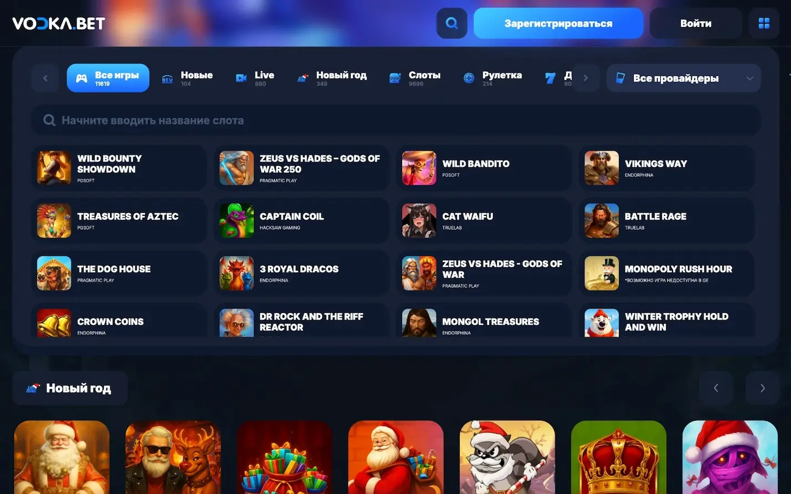

Vodka Casino — официальный сайт и игра онлайн
Vodka Casino — это популярная онлайн-платформа для игры на реальные деньги, предлагающая широкий выбор игровых автоматов, быстрый вход и доступ через рабочие зеркала. Пользователи могут играть онлайн, получать бонусы и использовать удобный интерфейс как на компьютере, так и на мобильных устройствах.
Платформа подходит как для новых игроков, так и для опытных пользователей. Доступны различные режимы игры, бонусные предложения и удобные способы пополнения и вывода средств.
Запросы вроде «casino vodka», «vodka casino сайт» и «казино водка» обычно ведут к одному и тому же бренду в разных написаниях: важно сверять адрес страницы, HTTPS и совпадение интерфейса с привычным официальным сайтом.
Обзор официального сайта казино Водка в 2026 году
Дизайн официального сайта выдержан в тёмно-синей цветовой гамме с акцентами красного и белого. Навигация интуитивная — все основные разделы размещены в верхнем меню. Игроки могут быстро перейти к слотам, настольным играм, live-казино или разделу с акциями. Каталог развлечений на платформе vodka casino насчитывает свыше 3000 позиций от таких провайдеров, как Pragmatic Play, NetEnt, Play'n GO, Evolution Gaming и Microgaming.
Интерфейс Водка казино полностью переведён на русский язык, что упрощает навигацию для пользователей из СНГ. Сайт адаптирован под все типы устройств — вход на официальный сайт Vodka Casino в 2026 году возможен с компьютера, планшета или смартфона без потери функционала. Скорость загрузки страниц высокая даже при среднем интернет-соединении. Поиск нужного слота занимает секунды благодаря удобным фильтрам по провайдеру, жанру и уровню волатильности.
Наличие лицензии и безопасность
Платформа Водка казино работает по лицензии Кюрасао (Antillephone N.V., номер лицензии 8048/JAZ), что подтверждает легальность деятельности оператора. Владельцем выступает компания Andivi B.V., зарегистрированная в Нидерландах. Все транзакции защищены протоколом SSL-шифрования, исключающим перехват данных третьими лицами. Слоты сертифицированы независимой организацией eCOGRA, гарантирующей честность генератора случайных чисел.
Казино водка строго соблюдает политику конфиденциальности — персональная информация игроков не передаётся сторонним компаниям. На сайте работают инструменты ответственной игры: установка лимитов на депозит, самоисключение и охлаждающий период. Играть могут только совершеннолетние пользователи — при верификации проверяется возраст.
Вход на рабочее зеркало Vodka Casino сегодня
Зеркало — это альтернативный домен с полной копией основного сайта. Такая технология нужна из-за блокировок Роскомнадзора, которые затрагивают многие онлайн-казино в России. Через зеркало Водка казино сохраняется доступ ко всем функциям: регистрации, игре, пополнению баланса и выводу средств. Важно понимать, что данные аккаунта синхронизированы — войти на сайт Vodka Casino по ссылке можно с любого устройства, и баланс останется прежним.
Актуальные адреса зеркал публикуются в официальном Telegram-канале, куда можно подписаться через раздел «Контакты». Также ссылки приходят на email при оформлении подписки на новости. Если оба способа недоступны, обратитесь в онлайн-чат службы поддержки vodka casino — оператор моментально предоставит рабочий адрес. Рекомендую добавить зеркало в закладки браузера, чтобы не искать его каждый раз заново.
Безопасность зеркал гарантирована наличием протокола HTTPS в адресной строке. Если видите значок замка рядом с URL — соединение защищено. Никогда не вводите логин и пароль на сайтах без SSL-сертификата. Все официальные зеркала используют те же методы шифрования, что и основной домен, поэтому риск утечки данных минимален.
Игровые автоматы и другие развлечения в казино
Каталог слотов водка казино превышает 3000 наименований. Здесь представлены классические автоматы в стиле ретро, современные видеослоты с бонусными раунами и джекпот-игры с прогрессивными призовыми фондами. Среди популярных позиций — Big Bass Bonanza от Pragmatic Play, Gates of Olympus с множителями до х5000 и Sweet Bonanza с каскадными барабанами. RTP в слотах достигает 98%, что считается высоким показателем отдачи.
Настольные игры представлены в разнообразии вариантов: европейская, американская и французская рулетка, несколько видов блэкджека, покер и баккара. Для тех, кто предпочитает атмосферу реального казино, работает live-раздел от Evolution Gaming. Профессиональные дилеры ведут игру в прямом эфире, а трансляция идёт в HD-качестве. Доступны live-версии рулетки, блэкджека, баккары и монополии.
Отдельная категория в водка казино — быстрые игры. Сюда входят краш-игры типа Aviator, где нужно успеть забрать ставку до вылета самолёта, лотереи и мини-игры с мгновенными результатами. Система фильтров позволяет сортировать развлечения по провайдеру, тематике или уровню волатильности. Новые слоты добавляются еженедельно, так что скучать не придётся.
Виды бонусов и акций в казино
Приветственный пакет водка казино растянут на четыре депозита и суммарно может принести до 110,000 рублей плюс 550 фриспинов. Первый депозит удваивается на 100% до 35,000₽ с добавлением 100 бесплатных вращений. Второй пополнение даёт 125% до 30,000₽ и 125 FS. Третий — 150% до 25,000₽ и 150 спинов. Четвёртый депозит приносит максимальный бонус 175% до 20,000₽ плюс 175 фриспинов. Вейджер на бонусные средства составляет х40-х50, что требует прокрутки суммы бонуса в 40-50 раз перед выводом.
Бездепозитные предложения водка казино тоже доступны. За привязку аккаунта Telegram игрок получает 50 бесплатных вращений без внесения депозита. Промокоды на дополнительные FS регулярно публикуются в социальных сетях казино — следите за обновлениями в официальных каналах. Условия отыгрыша бездепа строже: вейджер может достигать х60, а максимальная сумма вывода ограничена 5000 рублей.
Еженедельные акции работают по расписанию. По понедельникам начисляется кэшбэк до 15% от проигранных за неделю средств. Среда — день фриспинов: активным игрокам дарят до 150 FS на популярные слоты. Пятничный бонус составляет до 70% от суммы пополнения. VIP-программа vodka casino предлагает персональные условия: личного менеджера, ускоренные выплаты за 15-20 минут и приглашения на эксклюзивные турниры с крупными призовыми фондами.
Мобильные приложения онлайн казино Водка
Платформа водка казино разработала приложения для смартфонов на Android и iOS. Функционал полностью дублирует десктопную версию: регистрация, вход в аккаунт, пополнение баланса, игра в слоты и вывод средств. Главное преимущество приложения — push-уведомления об акциях, турнирах и новых играх. Запуск происходит моментально, без загрузки браузера. Интерфейс оптимизирован под вертикальную ориентацию экрана, что удобно для игры одной рукой.
Для ОС Андроид
APK-файл доступен для скачивания на официальном сайте в разделе «Мобильная версия». Google Play не размещает приложения казино, поэтому установка выполняется вручную. Перед загрузкой зайдите в настройки смартфона и разрешите установку из неизвестных источников. Минимальные системные требования — Android 5.0 и выше. Размер приложения составляет около 50 МБ, установка занимает не более минуты. После первого запуска войдите в аккаунт или создайте новый, если ещё не зарегистрированы в водка казино.
Для iPhone (iOS)
Версия для iPhone работает по технологии PWA (прогрессивное веб-приложение), что избавляет от необходимости скачивания через App Store. Откройте официальный сайт через браузер Safari, нажмите кнопку «Поделиться» и выберите «На экран домой». Ярлык появится среди остальных приложений. Системные требования — iOS 11.0 или новее. Функционал ничем не отличается от Android-версии: все игры, платёжные методы и бонусы доступны в полном объёме.
Особенности мобильной версии официального сайта

Если не хотите устанавливать приложение, воспользуйтесь мобильной версией через браузер. Дизайн адаптируется под размер экрана автоматически — верстка перестраивается в вертикальный режим. Все функции десктопа сохранены: каталог игр, бонусы, касса, служба поддержки и личный кабинет. Слоты запускаются в полноэкранном режиме без чёрных полос по краям.
Скорость загрузки оптимизирована под мобильный трафик — картинки и анимация сжаты без потери качества. Баланс синхронизируется между устройствами в реальном времени: сделали депозит с компьютера, а играть можете сразу со смартфона. Управление реализовано через жесты: свайп влево открывает меню, свайп вправо возвращает назад. Это делает навигацию быстрой и интуитивной даже для новичков.
Клиент казино для ПК
Отдельный десктопный клиент для установки на компьютер не предусмотрен. Основной способ игры — через браузер. Поддерживаются все популярные обозреватели: Google Chrome, Mozilla Firefox, Safari и Microsoft Edge. Преимущество браузерной версии — не нужно тратить место на жёстком диске. Просто откройте сайт, войдите в аккаунт и начинайте играть.
Производительность не зависит от наличия клиента. Слоты загружаются через html5-технологию, которая работает стабильно на любой операционной системе: Windows, macOS или Linux. Главное требование — актуальная версия браузера с поддержкой JavaScript. Если игры тормозят, обновите обозреватель до последней версии или очистите кэш.
Игра в казино в демо режиме
Демо-режим в водка казино позволяет запускать слоты бесплатно на виртуальные деньги. Регистрация не требуется — выбирайте понравившийся автомат и нажимайте «Играть бесплатно». Функция доступна для всех слотов и настольных игр, кроме live-казино. Это удобный способ изучить механику игры, протестировать бонусные раунды и оценить частоту выпадения выигрышных комбинаций.
Играть онлайн в казино Водка в демо режиме полезно для разработки стратегии без риска потери реальных денег. Например, можно проверить, как ведёт себя слот на длинной дистанции, какая волатильность у автомата и стоит ли вообще в него играть на деньги. Единственное ограничение демо-версии — выигрыши нельзя вывести. Виртуальный баланс обнуляется после закрытия игры, но его можно восстановить простым обновлением страницы.
Как играть в Vodka Casino на деньги
Чтобы играть в казино Водка на деньги в России, необходимо зарегистрироваться и пополнить баланс. Процесс состоит из трёх этапов: создание аккаунта, прохождение верификации (при первом крупном выводе) и внесение депозита. Минимальная сумма пополнения — 100 рублей, что делает платформу доступной даже для игроков с небольшим бюджетом. Все платёжные операции проходят через защищённые каналы с шифрованием данных.
Регистрация и вход в Личный кабинет
Создать аккаунт в водка казино можно тремя способами. Первый — классическая регистрация по email. Укажите адрес электронной почты, придумайте пароль, подтвердите совершеннолетие и нажмите «Зарегистрироваться». На почту придёт письмо с ссылкой для активации аккаунта — перейдите по ней, чтобы завершить процесс. Второй способ — регистрация по номеру телефона с подтверждением через SMS-код. Третий вариант — быстрая регистрация через социальные сети: Google или VK. Система автоматически подтянет данные из профиля.
Вход в личный кабинет водка казино выполняется через форму авторизации в правом верхнем углу. Введите email или телефон и пароль, затем нажмите «Войти». Если забыли пароль, воспользуйтесь функцией восстановления — на почту придёт ссылка для сброса. В личном кабинете доступны история игр, активные бонусы, настройки профиля и раздел для загрузки документов при верификации.
Процедура верификации
Верификация или KYC (Know Your Customer) — обязательная процедура для подтверждения личности игрока. Казино запрашивает документы при первом выводе суммы от 10,000 рублей. Это требование регулятора, направленное на борьбу с отмыванием денег. Для прохождения загрузите скан или фото паспорта (разворот с фотографией) и селфи с документом в руках. Иногда просят подтверждение адреса проживания — подойдёт выписка из банка или счёт за коммунальные услуги.
Документы загружаются через личный кабинет в разделе «Верификация». Проверка занимает от 24 до 48 часов. Служба безопасности сверяет данные в паспорте с информацией, указанной при регистрации. Если обнаружат расхождения, аккаунт могут заблокировать. После успешной верификации вывод средств становится доступным в любое время без дополнительных задержек.
Пополнение баланса и вывод средств
Для пополнения в водка казино доступны банковские карты Visa, Mastercard и МИР, система быстрых платежей (СБП), электронные кошельки ЮMoney и Qiwi, а также криптовалюта: Bitcoin, Ethereum и Tether. Минимальный депозит составляет 100 рублей, максимальный — 300,000 рублей за одну транзакцию. Средства зачисляются мгновенно, комиссия со стороны казино отсутствует. Некоторые платёжные системы взимают собственные сборы — уточняйте условия перед операцией.
Вывод выигрышей выполняется теми же методами, что и депозит. Минимальная сумма для снятия — 500 рублей, максимальная — 300,000 рублей в сутки. Обычные игроки получают деньги в течение 24 часов после одобрения заявки. VIP-клиентам доступны ускоренные выплаты за 15-20 минут. Комиссия зависит от выбранного способа: на карты и кошельки обычно без сборов, криптовалюта может облагаться небольшим процентом за обработку блокчейн-транзакции.
Служба поддержки клиентов казино
Служба поддержки работает круглосуточно без выходных. Связаться с операторами можно тремя способами: онлайн-чат на сайте, email (support@vodkacasino.com) или Telegram-бот. Самый быстрый вариант — чат, где ответ приходит в течение 1-3 минут. Email подходит для развёрнутых вопросов, требующих детального разбора — ответ придёт в течение 24 часов.
Операторы говорят на русском и английском языках, что упрощает коммуникацию для игроков из СНГ. Специалисты помогают с технической информацией: разблокировкой аккаунта, возвратом средств при ошибочных транзакциях, настройкой бонусов и решением споров. Уровень профессионализма в казино водка высокий — сотрудники знают нюансы работы платформы и дают чёткие инструкции по любому вопросу.
Плюсы и минусы игры в казино Водка
Преимущества:
- Лицензия Кюрасао гарантирует честную игру и защиту прав игроков
- Более 3000 слотов и настольных игр от топовых провайдеров индустрии
- Щедрая бонусная программа: до 110,000₽ и 550 фриспинов на четыре депозита
- Быстрые выплаты для VIP-клиентов — 15 минут против суток у конкурентов
- Рабочие зеркала обновляются ежедневно, доступ гарантирован 24/7
- Поддержка криптовалют для анонимных транзакций
- Мобильные приложения для Android и iOS с полным функционалом
Недостатки:
- Высокий вейджер на бонусы (х40-х50), что усложняет отыгрыш
- Верификация обязательна при выводе крупных сумм от 10,000₽
- Ограничения по регионам: не все страны принимаются
- Отсутствие спортивных ставок (они доступны только в отдельном проекте Vodka Bet)
FAQ
Как найти актуальное зеркало водка казино?
Актуальные ссылки публикуются в официальном Telegram-канале, приходят на email при подписке на рассылку или их можно запросить в онлайн-чате поддержки 24/7. Рекомендую добавить зеркало в закладки браузера, чтобы иметь постоянный доступ к платформе.
Можно ли играть в водка казино без регистрации?
Да, демо-режим доступен без регистрации для всех слотов и настольных игр. Однако для игры на реальные деньги и вывода выигрышей необходимо создать аккаунт и пройти верификацию при первом крупном выводе.
Какой минимальный депозит в Vodka Casino?
Минимальная сумма пополнения составляет 100 рублей через любой доступный метод оплаты: банковские карты, СБП, электронные кошельки или криптовалюту. Максимальный депозит — 300,000₽ за транзакцию.
Сколько времени занимает вывод средств в водка казино?
Обычные игроки получают выплаты в течение 24 часов после подтверждения заявки службой безопасности. VIP-клиентам доступны ускоренные выводы за 15-20 минут на любой платёжный метод.
Нужна ли верификация аккаунта?
Верификация требуется при первом выводе крупных сумм (обычно от 10,000₽). Для этого нужно загрузить скан паспорта и селфи с документом в личный кабинет. Проверка занимает 24-48 часов.
Какие провайдеры игр представлены в водка казино?
На платформе доступны игры от Pragmatic Play, NetEnt, Play'n GO, Evolution Gaming, Microgaming, BGaming и других топовых разработчиков. Каталог обновляется еженедельно — новые слоты добавляются регулярно.
Безопасно ли играть в водка казино?
Да, казино водка работает по лицензии Кюрасао, использует SSL-шифрование данных и сертифицированные слоты с проверкой eCOGRA. Все персональные данные игроков надёжно защищены и не передаются третьим лицам.
Быстрые ответы по бренду Vodka Casino
Vodka Casino и Casino Vodka — это одно и то же?
Да, это разные формулировки одного бренда: русскоязычное «казино водка» и латиница в названии. Важно ориентироваться на официальный сайт, зеркало и службу поддержки, а не на случайные копии в выдаче.
Где проверить, что я на официальном сайте?
Сверяйте HTTPS, политику конфиденциальности и каналы поддержки. Подробный чек-лист — на странице официального сайта Vodka Casino.
Нужна ли мобильная версия или приложение?
Мобильная версия повторяет функции десктопа; приложение удобно для push-уведомлений. Оба варианта совместимы с регистрацией и бонусами.
Можно ли играть онлайн на деньги сразу после регистрации?
После пополнения счёта да; до этого доступен демо-режим на игровых автоматах. Вывод крупных сумм может потребовать верификации.
Куда обратиться, если не открывается вход?
Сначала попробуйте рабочее зеркало, затем восстановление пароля или чат поддержки на официальной площадке.
Готовы открыть Vodka Casino: пройти вход, активировать бонус и играть онлайн в любимые слоты?
Перейти на официальную площадкуИнформация носит обзорный характер. Играйте ответственно, соблюдайте законы вашей страны и используйте только подтверждённые каналы связи с оператором. Разделы про скачать приложение Vodka Casino, играть на деньги и отзывы дополняют этот материал.